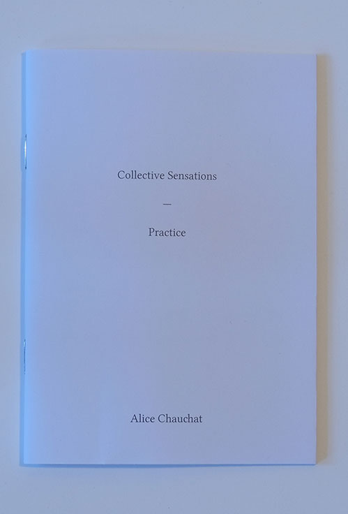

Collective Sensations (praticable) 
Samizdat, 2009 The dance practice presented in this booklet was developed between September 2007 and August 2009. It emerged in the context of Praticable, a platform I had set up together with Frédéric de Carlo, Frédéric Gies, Isabelle Schad, and Odile Seitz in 2006. This practice organizes the sharing of dance knowledges and scattered experiences without classification or hierarchy. It was also an attempt to find answers to some questions that the other practices shared within the group (especially Body-Mind Centering®) had raised for me, such as: can we feel imaginary bodies? Can we physically differentiate our experience of reality from our fantasies? This booklet contains the score to the practice, a text about its stakes (context, sensation & imagination, language, horizontality, communality & alterity) as well as a selection of transcripts from practice sessions. These may be read as an open-ended resource of possible dances, an endless encyclopedia of tasks that can grow from the encounter of various understandings of dance, of the body, and their possible descriptions. On the base of this practice were created two performances: Sensation & Imagination, a study (practicable) and Collective Sensations (practicable) Praticable was an open collective structure created in 2006 with Frédéric Gies, Frédéric de Carlo, Isabelle Schad and Odile Seitz for the horizontal distribution of movement knowledge and visibility. |